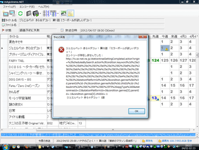

mAgicAnime って iEPG にしか対応してないのー！？ iEPGデジタルに対応してないのー！？ ヤダー！！
ってことで、地デジに対応する為のプラグインです。
というセクションをもうけたは良いものの、よく考えたら mAgicAnime の設定により各個人の使い方が異なってくることに気づいたどうしよう。
…んまぁなに？ 適当に録画したい番組を右クリックして「録画予約」って選択してみればいいんじゃないのー？
※なお、そのまま使えるケースは６割ほどで、大概はエラーが出ます。 エラーの際は次のセクション 「エラーが出て録画予約できないんだけど」 を見てください。
".tvpid" というファイルをつくって、それを実行します。 ".tvpid" という拡張子を iEPGデジタル 対応のアプリに関連づけてください。
４つのパターンのウチどれかに当てはまるかと思います。 複合的な要因になってたりもするかも。
mAgicAnime 側で "TVKテレビ" となりつつも、検索ページでは "TVK" とかなってるとテレビ局名不一致でエラーになります。
を一致させてください。「TOKYO MX」が「ＴＯＫＹＯ ＭＸ1」とか微妙な違いがあるケースもありますので要注意や！
放送局が TVK なのに、検索地域が "東京" じゃ、検索に出てこないよねー
「マリー＆ガリー」 って番組は無いんだよ！「すイエんサー」って番組名しか無いんだよ！ あとは mAgicAnime 側では「Rozen Maiden」って番組名だけど、検索ページでは「ローゼンメイデン」でしか出てこないとか。
「検索キーワード」 で検索キーワードを設定しましょう。
検索結果が大杉で、結果表示の1ページ目に目的の番組が無いのかもしれません。
上手い具合に検索キーワードを調整するか、「放送波」で地デジ/BSで絞るか、「大ジャンル」でジャンルを絞って下さい。（まぁ「アニメ／特撮」ですよね…）
予約に失敗した場合は URL が表示されます。 このURLで表示される結果から iEPGデジタル を拾ってきます。 つまり、このURLに目的の番組が見つからないと予約録画は出来ません…というわけで、URLに飛んで検索結果に目的のモンが表示されているか確認しましょう。
URLをコピーするには、メッセージボックスが表示されている時に CTRL+C を押してコピー → メモ帳を起動して CTRL+V して貼り付けると…なんとそのままメッセージがテキストとして出力されます！なんという Windows の隠し仕様…！ こんなん気づくかよ！！

↑この時に CTRL + C を push! → そのままメモ帳を起動して貼り付け
お楽しみください。
頑張ってください。
カナカナカナりん！じゃんけんぽん！ かしらー
{kind=link}
{kind=link}
{kind=link}